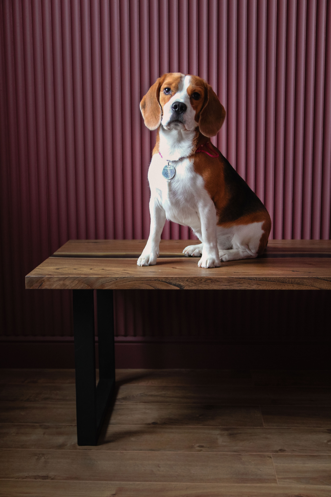
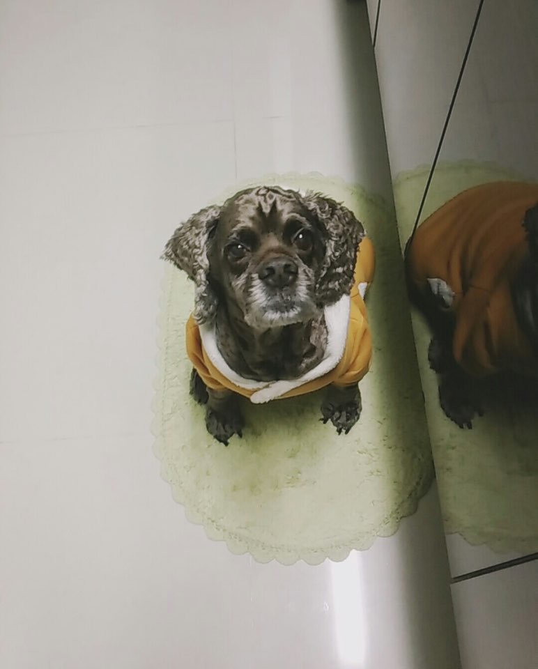

제페니스 스피츠
- 출생지: 일본
- 수명: 12~15년
- 성격: 영리하고 똑똑하며 사교성이 좋고 경계심이 많음
- 크기: 중형(30~36cm)
- 색상: 흰색
제페니스 스피츠는 중형견에 속하며 일본에서 개량한 종이다. 여우같이 뾰족한 주둥이와 눈을 사로잡을 만한 우아한 외모를 가지고 있으며, 털빠짐 이 심하다. 그리고 경계심이 심하고 스피츠 계열의 야생 본능이 살아있어 교육을 안시키면 사람을 물수도 있다 그렇지만 주인에게 만큼은 충성심이 강한 종이다. 똑똑하기도 하니 복종훈련만 잘시키면 문제 없다. 슬개골탈구가 자주 발생될수 있기 때문에 이점 유의하여 키우길 바란다.

프렌치불독
- 출생지: 프랑스
- 수명: 10~12년
- 성격: 밝고 다정한 성격임 장난을 좋아하며 영리하다
- 크기: 중형(27~33cm)
- 색상: 검정색과 갈색이 섞인 얼룩무늬, 크림색, 옅은 황갈색, 흰색
프렌치 불독은 중형견에 속하며 영국에서 테리어와 퍼그를 개량한 종이며 품종 이 후 프랑스로 건너옴 다부진몸과 무섭게 생긴 외모와 는 다르게 성격이 밝으며 다정다감한 반전 매력이 있다. 활동량 또한 많아서 자주 산책 시켜줘야 하며 단두종이기 때문에 너무 격한 운동은 호흡곤란이 올수 있으니 주의 해야한다. 건강한 편이지만 안구 및 알레르기 등의 유전적 질환에 유의하며 키우길 바란다.

웰시코기
- 출생지: 영국
- 수명: 12~15년
- 성격: 자신감 있고 친절하며 수줍거나 사납지 않음
- 크기: 중형(30cm내외)
- 색상: 붉은색 세이블 검은색 or 황갈색 흰반점
웰시코기는 중형견에 속하며 과거에는 가축몰이 를 하던 견종이였으며 꼬리가 밟힐 위험이 있어 단미(꼬리를 자르는 수술)를 했지만 요새는 꼭 필수로 해야 한다는 인식이 생겨 단미를 진행 한다고 한다. 다리가 짧고 긴허리 짧은 꼬리와 빵실빵실한 엉덩이가 매력적인 견종이다. 활발하고 쾌활한 성격에 공격성이 거의 없어 온순한 품종으로 사교성 또한 매우 좋아 사람을 좋아하며 친화력이 좋다. 짧은 다리와 긴 허리로 인해 비만이 오면 허리디스크가 올수 있으니 이점 유의하며 키우길 바란다.

비글
- 출생지: 영국
- 수명: 12~15년
- 성격: 기민하고 영리하며 성격이 온화하고 붙임성이 많다.
- 크기: 중형(33~40cm)
- 색상: 검은색, 황갈색, 흰색 or 청색, 흰색, 황갈색이 섞인 삼색이다.
비글은 중형견에 속하며 예로부터 사냥개로 활동을 했으며 현재에도 사냥견으로 활동중 이다. 비글은 악마견으로 잘 알려져 있으며 이는 활동량이 많은 비글을 제대로 케어를 못하고 혼자둘 경우 주체를 못하여 일어난 일이다. 충분한 산책을 하면 악마견이라 불릴일이 없으며 애착이 많고 활발하고 낙척적인 성격을 지녔으며 호기심이 많고 장난 치는걸 좋아한다. 하지만 어딜가도 적응력이 뛰어나서 이러한 이유로 동물실험에 가장 많이 활용 된다고 한다. 그리고 독립적인 면이 있어 복종훈련은 까다로운 편이다. 외이염, 백내장, 뇌전증등 질병에 유의하여 키우길 바란다.

코카스파니엘
- 출생지: 영국
- 수명: 10~15년
- 성격: 활발하고 명랑하며 활동적이다.
- 크기: 중형(36~41cm)
- 색상: 검정색,크림색,갈색,초콜릿색
코카스파니엘은 중형견에 속하며 비글과 마찬가지로 3대 악마견으로 불리지만 이는 장난기가 많고 사냥견이 었던 특성 때문에 활동량이 많아서 그렇다. 곱슬거리는 긴털과 긴귀가 매력적이고 모델같은 생각이 들 정도이며 그만큼 털관리를 잘해주면 이쁘게 키울수 있는 견종이다. 어릴때 교육을 잘 시키지 않으면 버릇이 나빠질수 있으며 식탐이 많아 관리를 안해주면 비만이 올수도 있다. 그리고 망막위축,백내장,외이염 등 질병이 걸릴수 있으니 이점 주의하며 키우길 바란다.

시바견(시바이누)
- 출생지: 일본
- 수명: 13~16년
- 성격: 행동이 민첩하고 영리하며 감각이 예민함
- 크기: 중형(34~41cm)
- 색상: 붉은색, 크림색, 검정 갈색 흰색이 섞인 삼색
시바견(시바이누)는 중형견에 속하며 옛날부터 꿩같은 새나 작은 동물을 사냥하거나 서포터 하는 역할을 하는 견종이었다. 보호자에게 충실하고 애교가 많은 편이다. 그리고 시바이누는 개체 마다 차이는 있지만 자신의 공간에 배변활동 하는것을 싫어해 실외 배변을 하는 아이들이 있다. 그리고 어릴때 입질이 많은편 이며 이때 장난이나 애교로 보고 넘기면 나중에 성견이 된후에 버릇이 돼 자칫하면 피를 볼수도 있다. 이러함 점을 어릴때 부터 교육을 시켜야한다. 별다른 질병에는 잘걸리지 않는 편이지만 나중에 나이 들었을때 치매에 걸릴 확률이 다른 견종에 비해 높으니 이점 주의하며 키우길 바란다.

셔틀랜드 쉽독
- 출생지: 영국
- 수명: 10~15년
- 성격: 똑똑하고 장난기가 많으며 사람들을 좋아함
- 크기: 중형(33~44cm)
- 색상: 흰색과함께 갈색,검정색,회색,적갈색 등.
셔틀랜드 쉽독은 중형견에 속하며 마치 콜리를 작게 축소한 듯한 작고 귀여운 외모를 갖고 있고 셸티(sheltie)라는 귀여운 애칭으로도 불린다. 셔틀랜드 섬에서 양떼를 몰고 지키는 역할을 한 목양견이다. 풍성하고 아름다운 털을 갖고 있는 개로 외모처럼 똑똑하고 장난치기를 좋아한다. 배우는 것을 좋아하고 똑똑해서 훈련을 시키면 잘 따라한다. 주인에 대한 충성심과 복종심이 매우 강하다. 성격이 좋아서 사람들을 좋아하고 어린이와도 잘 맞는다. 목양견으로 크기에 비해 운동량이 상당히 많은 편이다. 하루에 네 번 20분씩 운동을 시켜야 하고 털이 많이 빠지는 편이므로 엉키지 않게 자주 빗질을 해주어야 한다. 슬개골 탈구, 소화불량, 간질 등 질병에 걸릴수 있으니 이점 주의하며 키우길 바란다.

보스턴테리어
- 출생지: 미국
- 수명: 11~13년
- 성격: 다정하고 활기참 태도가 매우 바르며 지능이 뛰어남
- 크기: 중형(25~43cm)
- 색상: 얼룩무늬 이거나, 흐린검정 or 검정 에 흰색 반점이 섞임